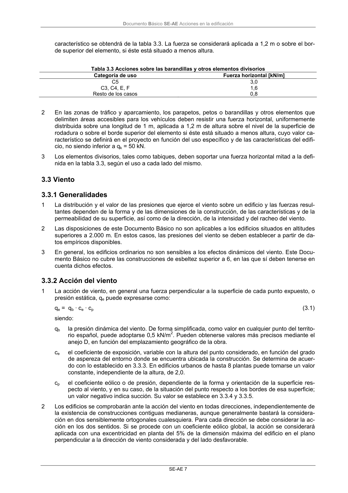

DB-SE-AE · 3.3.2 Acción del viento · versión 2009-04 · capa oficial
Formatos: JSON compacto · Markdown · PDF fuente
Ámbito del documento · texto del ámbito · documento y tablas
ID técnico a0019 · PDF pág. 11 · jerarquía no validada por persona · contrastado con el literal de la página 11 (candidato tipográfico); no validado por persona · padre: raíz
3.3.2 Acción del viento 1 La acción de viento, en general una fuerza perpendicular a la superficie de cada punto expuesto, o presión estática, qe puede expresarse como: qe = qb · ce · cp (3.1) siendo: qb la presión dinámica del viento. De forma simplificada, como valor en cualquier punto del territo- rio español, puede adoptarse 0,5 kN/m2. Pueden obtenerse valores más precisos mediante el

PDF fuente redistribuible: copia fiel enlazada en esta página (SHA256 verificado).